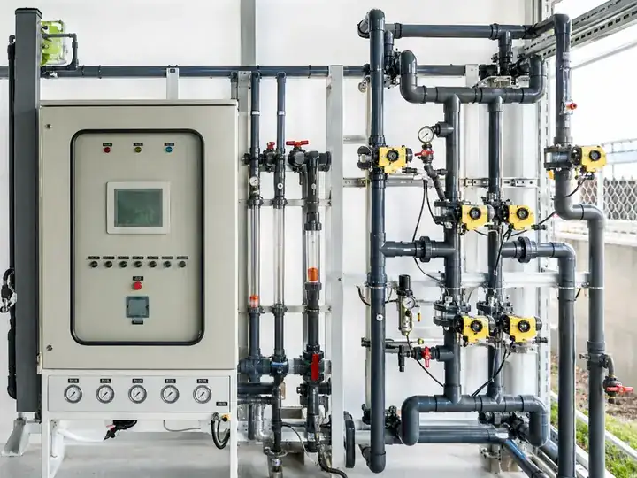

01
Control philosophy
Define equipment states, sequence transitions, manual/automatic actions, setpoints, permissives and hold/abort/restart behavior.
Batch automation should bring manual steps, PLC sequences, recipes, material movements and records together without hiding what operators need.

01 / Technical starting point
The essential inputs are the steps, permissives, interlocks, operating modes, measurements, exceptions and recovery paths. A useful sequence specification makes it possible to test normal and abnormal cases before the plant depends on the new controls.
Explore our engineering phases
02 / Technical considerations
Typical scoping questions. The answers shape the scope, deliverables and acceptance criteria for your project.
Define equipment states, sequence transitions, manual/automatic actions, setpoints, permissives and hold/abort/restart behavior.
Connect temperature, pressure, flow, level, weight, analytical measurements, valves, drives, package systems and utilities as needed.
Support understandable HMI states, alarms, trends and the required level of batch or cycle recording without overcomplicating operations.
Test normal and abnormal paths, unavailable equipment, interlocks, simulated inputs, operator prompts and recovery before site sign-off.
Every project requires a defined technical owner, acceptance basis and a scope proportionate to its operating context.
03 / Scope logic
The aim is to distinguish what is known, what must be engineered and what evidence is needed next.
Document steps, boundaries and who takes each operating action.
Engineer PLC/HMI/SCADA logic, interfaces, panels, and defined data records.
Test expected sequences and failure paths against agreed acceptance criteria.
04 / Delivery sequence
Contract stages remain separate. Progression from Basic Engineering & Feasibility to Detailed Engineering or Integrated Design & Build is not automatic.
05 / First conversation
A useful first discussion is about the existing basis, the technical uncertainty and the milestone it affects. A complete specification is not required to start clarifying the scope.
Prepare a technical enquiry06 / Common questions
No. Some need structured recipes or phase management; others are better suited to a PLC sequence with controlled parameters. The choice depends on complexity and reporting requirements.
Yes. Manual sampling, verification or handling may remain appropriate when their roles, prompts, records and control boundaries are clearly defined.
Let's grow together